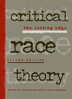

Essays on racial justice by leading members of the Critical Race Theory movement
Essays on racial justice by leading members of the Critical Race Theory movement


 Essays on racial justice by leading members of the Critical Race Theory movement
Essays on racial justice by leading members of the Critical Race Theory movement

|  |
Critical Race TheoryThe Cutting Edge2nd Editionedited by Richard Delgado and Jean Stefancicpaper EAN: 978-1-56639-714-8 (ISBN: 1-56639-714-6) |
"This new collection of essays…is an important resource for those who are willing to invest time and energy in trying to understand the extraordinarily complicated ways race and racism function in this country, and the ways those dynamics spill over into many other areas."
—The Diversity Factor
This tightly edited volume contains the finest, highly accessible articles in the fast-growing legal genre of critical race theory—a field which is changing the way this nation looks at race, challenging orthodoxy, questioning the premises of liberalism, and debating sacred wisdoms. Including treatments of two new, exciting topics—Critical Race Feminism and Critical White Studies—this volume is truly on "the cutting edge." Questions for discussion and reading suggestions after each part make this volume essential for those interested in law, the multiculturalism movement, political science, and critical thought.
In this wide-ranging second edition, Richard Delgado and Jean Stefancic bring together the finest, most illustrative, and highly accessible articles in the fast-growing legal genre of Critical Race Theory. In challenging orthodoxy, questioning the premises of liberalism, and debating sacred wisdoms, Critical Race Theory scholars writing over the past few years have indelibly changed the way America looks at race.
This edition contains treatment of all the topics covered in the first edition, along with provocative and probing questions for discussion and detailed suggestions for additional reading, all of which set this fine volume apart from the field. In addition, this edition contains five new substantive units—crime, critical race practice, intergroup tensions and alliances, gay/lesbian issues, and transcending the black-white binary paradigm of race. In each of these areas, groundbreaking scholarship by the movement's founding figures as well as the brightest new stars provides immediate entry to current trends and developments in critical civil rights thought.
Excerpt available at www.temple.edu/tempress
"...a rich trove of articles for readers who wish to delve into this important new field of inquiry."
—Journal of American Ethnic History
"Critical Race Theory tackles numerous issues by presenting several related essays within themed sections.... The material is sometimes dense, confrontational, rhetorical, and demanding.... But it is must-read material. The book raises more questions than answers, and that's fine. It forces us to face uncomfortable issues and think hard about our legal system and our place in it."
—The Federal Lawyer
Acknowledgments
Introduction
Part I: Critique of Liberalism
1. After We’re Gone: Prudent Speculations on America in a Post-Racial Epoch – Derrick A. Bell, Jr.
2. The Chronicles, My Grandfather’s Stories, and Immigration Law: The Slave Traders Chronicle as Racial History – Michael A. Olivas
3. Pure Politics – Girardeau A. Spann
4. A Critique of “Our Constitution Is Color-Blind” – Neil Gotanda
From the Editors: Issues and Comments
Suggested Readings
Part II: Storytelling, Counterstorytelling, and “Naming One’s Own Reality”
Section One: Theorizing about Narratives
5. The Richmond Narratives – Thomas Ross
6. Translating Yonnondio by Precedent and Evidence: The Mashpee Indian Case – Gerald Torres and Kathryn Milun
Section Two: Theorizing about Counterstories
7. Storytelling for Oppositionists and Others: A Plea for Narrative – Richard Delgado
8. Property Rights in Whiteness: Their Legal Legacy, Their Economic Costs – Derrick A. Bell, Jr.
Section Three: Examples of Stories
9. Alchemical Notes: Reconstructing Ideals from Deconstructed Rights – Patricia J. Williams
From the Editors: Issues and Comments
Suggested Readings
Part III: Revisionist Interpretations of History and Civil Rights Progress
10. Documents of Barbarism: The Contemporary Legacy of European Racism and Colonialism in the Narrative Traditions of Federal Indian Law – Robert A. Williams, Jr.
11. Desegregation as a Cold War Imperative – Mary L. Dudziak
12. Did the First Justice Harlan Have a Black Brother? – James W. Gordon
From the Editors: Issues and Comments
Suggested Readings
Part IV: Critical Understanding of the Social Science Underpinnings of Race and Racism
13. Words That Wound: A Tort Action for Racial Insults, Epithets, and Name-Calling – Richard Delgado
14. Law as Microaggression – Peggy C. Davis
15. Black Innocence and the White Jury – Sheri Lynn Johnson
16. The Social Construction of Race – Ian F. Haney López
From the Editors: Issues and Comments
Suggested Readings
Part V: Crime
17. Race Ipsa Loquitur: Of Reasonable Racists, Intelligent Bayesians, and Involuntary Negrophobes – Jody D. Armour
18. Racially Based Jury Nullification: Black Power in the Criminal Justice System – Paul Butler
19. Race and Self-Defense: Toward a Normative Conception of Reasonableness – Cynthia Kwei Yung Lee
From the Editors: Issues and Comments
Suggested Readings
Part VI: Structural Determinism
20. Why Do We Tell the Same Stories? Law Reform, Critical Librarianship, and the Triple Helix Dilemma – Richard Delgado and Jean Stefancic
21. Images of the Outsider in American Law and Culture: Can Free Expression Remedy Systemic Social Ills? – Richard Delgado and Jean Stefancic
22. Serving Two Masters: Integration Ideals and Client Interests in School Desegregation Litigation – Derrick A. Bell, Jr.
From the Editors: Issues and Comments
Suggested Readings
Part VII: Race, Sex, Class, and Their Intersections
23. Rodrigo’s Sixth Chronicle: Intersections, Essences, and the Dilemma of Social Reform – Richard Delgado
24. Race and Essentialism in Feminist Legal Theory – Angela P. Harris
25. A Hair Piece: Perspectives on the Intersection of Race and Gender – Paulette M. Caldwell
From the Editors: Issues and Comments
Suggested Readings
Part VIII: Essentialism and Anti-Essentialism
26. “The Black Community,” Its Lawbreakers, and a Politics of Identification – Regina Austin
27. Traces of the Master Narrative in the Story of African American/Korean American Conflict: How We Constructed “Los Angeles” – Lisa C. Ikemoto
28. Racial Critiques of Legal Academia – Randall L. Kennedy
From the Editors: Issues and Comments
Suggested Readings
Part IX: Gay-Lesbian Queer Issues
29. Gendered Inequality – Elvia R. Arriola
30. Out Yet Unseen: A Racial Critique of Gay and Lesbian Legal Theory and Political Discourse – Darren Lenard Hutchinson
31. Sex and Race in Queer Legal Culture: Ruminations on Identities and Interconnectivities – Francisco Valdes
From the Editors: Issues and Comments
Suggested Readings
Part X: Beyond the Black-White Binary
32. The Black/White Binary Paradigm of Race – Juan F. Perea
33. Toward an Asian American Legal Scholarship: Critical Race Theory, Post-Structuralism, and Narrative Space – Robert S. Chang
34. Race and Erasure: The Salience of Race to Latinos/as – Ian F. Haney López
35. Mexican Americans and Whiteness – George A. Martinez
From the Editors: Issues and Comments
Suggested Readings
Part XI: Cultural Nationalism and Separatism
36. Rodrigo’s Chronicle – Richard Delgado
37. Affirmative Action as a Majoritarian Device: Or, Do You Really Want to Be a Role Model? – Richard Delgado
38. Bid Whist, Tonk, and United States v. Fordice: Why Integrationism Fails African-Americans Again – Alex M. Johnson, Jr.
39. African-American Immersion Schools: Paradoxes of Race and Public Education – Kevin Brown
40. Law as a Eurocentric Enterprise – Kenneth B. Nunn
From the Editors: Issues and Comments
Suggested Readings
Part XII: Intergroup Relations
41. Embracing the Tar-Baby: LatCrit Theory and the Sticky Mess of Race – Leslie Espinoza and Angela P. Harris
42. Beyond Racial Identity Politics: Towards a Liberation Theory for Multicultural Democracy – Manning Marable
43. Rethinking Alliances: Agency, Responsibility, and Interracial Justice – Eric K. Yamamoto
From the Editors: Issues and Comments
Suggested Readings
Part XIII: Legal Institutions, Critical Pedagogy, and Minorities in the Law
44. The Civil Rights Chronicles: The Chronicle of the DeVine Gift – Derrick A. Bell, Jr.
45. “The Imperial Scholar” Revisited: How to Marginalize Outsider Writing, Ten Years Later – Richard Delgado
46. Autobiography and Legal Scholarship and Teaching: Finding the Me in the Legal Academy – Jerome McCristal Culp, Jr.
From the Editors: Issues and Comments
Suggested Readings
Part XIV: Critical Race Feminism
47. Stealing Away: Black Women, Outlaw Culture, and the Rhetoric of Rights – Monica J. Evans
48. Máscaras, Trenzas, y Greñas: Un/masking the Self While Un/braiding Latina Stories and Legal Discourse – Margaret E. Montoya
49. Men, Feminism, and Male Heterosexual Privilege – Devon W. Carbado
50. Converging Stereotypes in Racialized Sexual Harassment: Where the Model Minority Meets Suzie Wong – Sumi K. Cho
51. Race and the New Reproduction – Dorothy E. Roberts
From the Editors: Issues and Comments
Suggested Readings
Part XV: Criticism and Self-Analysis
52. Racial Critiques of Legal Academia – Randall L. Kennedy
53. Derrick Bell-Race and Class: The Dilemma of Liberal Reform – Alan D. Freeman
54. Is the Radical Critique of Merit Anti-Semitic? – Daniel A. Farber and Suzanna Sherry
55. The Bloods and the Crits – Jeffrey Rosen
From the Editors: Issues and Comments
Suggested Readings
Part XVI: Critical Race Praxis
56. The Work We Know So Little About – Gerald P. López
57. Reconstructive Poverty Law Practice: Learning Lessons of Client Narrative – Anthony V. Alfieri
58. Making the Invisible Visible: The Garment Industry’s Dirty Laundry – Julie A. Su
59. Vampires Anonymous and Critical Race Practice – Robert A. Williams, Jr.
From the Editors: Issues and Comments
Suggested Readings
Part XVII: Critical White Studies
60. White by Law – Ian F. Haney López
61. Innocence and Affirmative Action – Thomas Ross
62. Obscuring the Importance of Race: The Implications of Malting Comparisons Between Racism and Sexism (or Other -Isms) – Trina Grillo and Stephanie M. Wildman
63. Language and Silence: Malting Systems of Privilege Visible – Stephanie M. Wildman with Adrienne D. Davis
From the Editors: Issues and Comments
Suggested Readings
About the Contributors
Index
 | Richard Delgado, Jean Lindsley Professor of Law at the University of Colorado at Boulder, is one of the founding members of the Conference on Critical Race Theory. Winner of the Association of American Law Schools' 1995 Clyde Ferguson Award for outstanding law professor of color, he is the author of over 100 articles in the law review literature on civil rights and of several books, including Failed Revolutions, Words that Wound, The Rodrigo Chronicles, and Critical White Studies (Temple). |
 | Jean Stefancic, Research Associate in Law at the University of Colorado, is the author of leading articles and books on Critical Race Theory, Latino/a scholarship, and social change, including No Mercy: How Conservative Think Tanks and Foundations Changed America's Social Agenda (Temple). |
Contributors: Anthony V. Alfieri, Jody D. Armour, Elvia R. Arriola, Regina Austin, Derrick A. Bell, Jr., Kevin Brown, Paul Butler, Paulette M. Caldwell, Devon W. Carbado, Robert S. Chang, Sumi K. Cho, Jerome McCristal Culp, Jr., Adrienne D. Davis, Peggy C. Davis, Richard Delgado, Mary L. Dudziak, Leslie Espinoza, Monica J. Evans, Daniel A.Farber, Alan D. Freeman, James W. Gordon, Neil Gotanda, Trina Grillo, Ian F. Haney Lopez, Angela P. Harris, Darren Lenard Hutchinson, Lisa C. Ikemoto, Alex M. Johnson, Jr., Sheri Lynn Johnson, Randall L. Kennedy, Cynthia Kwei Yung Lee, Gerald P. Lopez, Manning Marable, George A. Martinez, Kathryn Milun, Margaret E. Montoya, Kenneth B. Nunn, Michael A. Olivas, Juan F. Perea, Dorothy E. Roberts, Jeffrey Rosen, Thomas Ross, Suzanna Sherry, Girardeau A. Spann, Jean Stefancic, Julie A. Su, Gerald Torres, Francisco Valdes, Stephanie M. Wildman, Patricia J. Williams, Robert A. Williams, Jr., Eric K. Yamamoto.
Law and Criminology
Political Science and Public Policy
Sociology
© 2016 Temple University. All Rights Reserved. This page: http://www.temple.edu/tempress/titles/1169_reg.html.